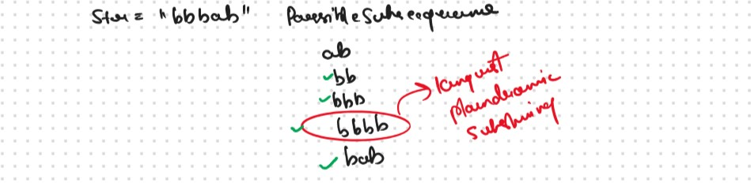
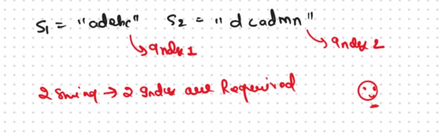
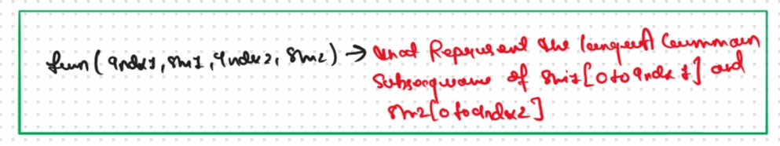
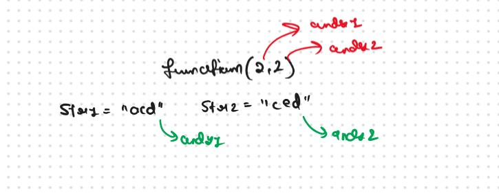
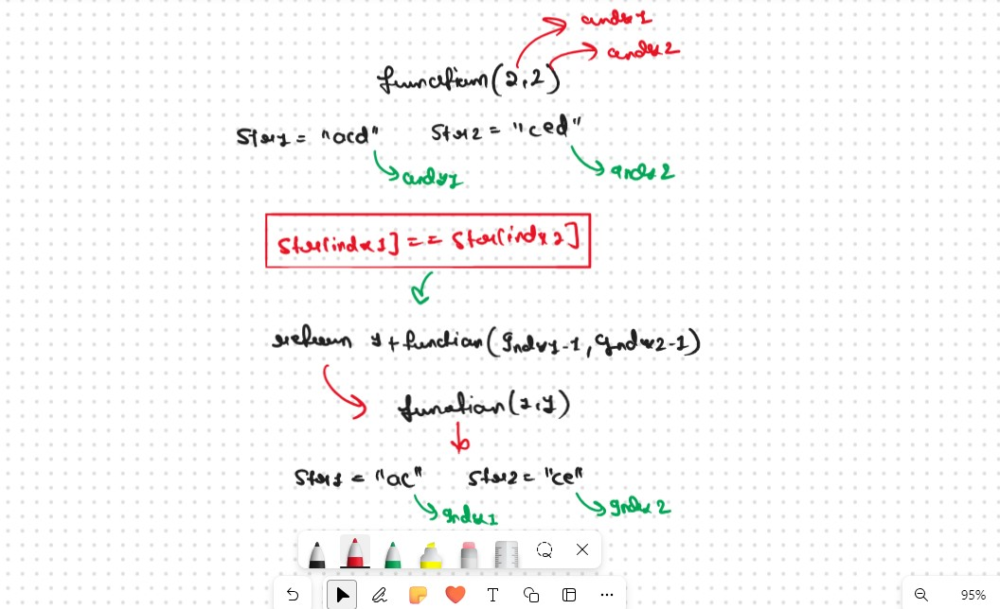
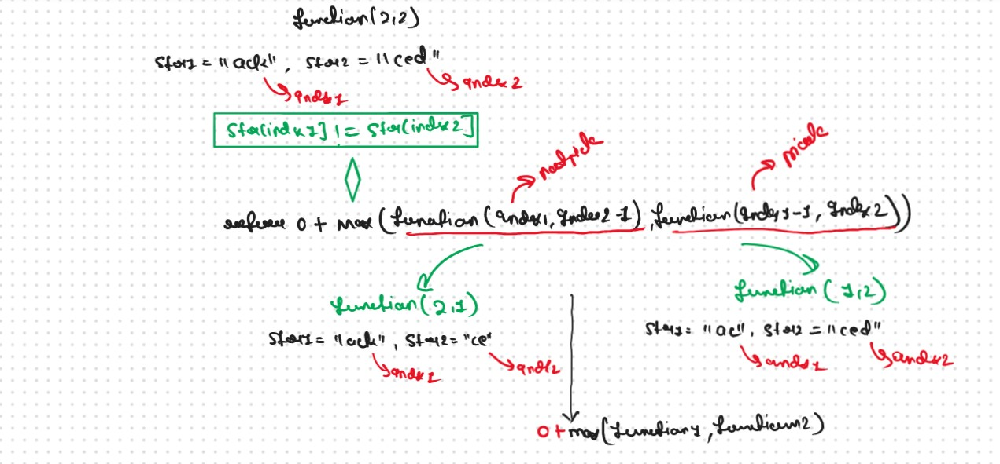

JB TAK FODEGA NHI .... TB TK CHODEGA NHI .... (MAANG)


DPL28 Longest Palindromic Subsequence
A palindromic string is a string that is equal to its reverse. For example: “Nitin” is a palindromic string. Now the question states to find the length of the longest palindromic subsequence of a string. It is that palindromic subsequence of the given string with the greatest length. We need to print the length of the longest palindromic subsequence.

Let's Try To Conncet this Problem with the DPL25
No the Question is Why we Want to Connect this Question with the DLP25? becouse we want to creat the problrm patters.
If We Closely Observed then this Problem is the Replica of the DPL25 becouse Our task is Find the Longest Palindromic Subsequence and what is the Longest Palindromic Subsequence? those String that equla to the its Reverse String that is Palindromic String.
Why we Wnat to Reverse the String?
Becouse we Try to Convert this Problem into the DPL25, After Converting the Our Given String into the S1 and S2
if we Observed very carefully then this is nothing but this is the Longest Common Subsequence in the Both String.
Longest Common Subsequence is the the Our Ans, becouse we know that the Defination of the Palindromic String we have S1 and reverse(S1) if Some part of the both String is Common that is the Our ans.
Thst's why we try to Convert this Problem into the DPL25
Now Remaining Entire üëá Process will Be Same As Like in DPL25
In This Part we Discuss about DP on String and we form the
VVVV Imp Always Remember
For a string of length n, the number of subsequences will be 2^n.
if we want to generate of find all the possible Subsequences then we have 2 different Approch.
Algorithm / Intuition
If We Talk About the Brute Force Approch then, We are given two strings, S1, and S2 (suppose of same length n), the simplest approach will be to generate all the subsequences and store them, then manually find out the longest common subsequence.
This Approach will give us the correct answer but to generate all the subsequences, we will require exponential ( 2n ) time. Therefore we will try some other approaches.
Now here we go with the Dynamic Programming and Recursion To generate all subsequences we will use recursion and in the recursive logic
Recursice Approch
Steps to form the Recursive SolutionStep 1: Express the problem in terms of indexes.

A single variable can’t express both the strings at the same time, so we will use two variables ind1 and ind2. They mean that we are considering string S1 from index 0 ind1 and string S2 from index 0 to S2. So our recursive function will look like this

Intuition for Recursive Logic



Step 3: Return the maximum of Pick and notPick

if S1[ind1] != S2[ind2]
The final pseudocode after steps 1, 2, and 3

Recursion Tree

.png)
.png)
Sb Mai He Kru ...
Khud Bhi Kr le Khuch ..... Nalayk
Time & Space Complexity
Time Complexity: O(2^N)Reason: Exponential Time we find out the all the Possible Path
Space Complexity: O(N)
Reason: We are using a recursion stack space(O(N))
Memoization Approch
If we observe in the recursion tree, we will observe a many number of overlapping subproblems. Therefore the recursive solution can be memoized for to reduce the time complexity.
Steps to convert Recursive code to memoization solution: .png)
.png)
Sb Mai He Kru ...
Khud Bhi Kr le Khuch ..... Nalayk
Time & Space Complexity
Time Complexity:O(N*M)Reason: There are N*M states therefore at max ‘N*M’ new problems will be solved.
Space Complexity: O(N*M) + O(N+M)
Reason: We are using an auxiliary recursion stack space(O(N+M)) (see the recursive tree, in the worst case, we will go till N+M calls at a time) and a 2D array ( O(N*M)).
Tabulation Approch
Tabulation is a ‘bottom-up’ approach where we start from the base case and reach the final answer that we want and Memoization is the Top-down Approch.In Tabulation Approch We Just Creat a DP Array Same as Memoization and Simply Convert the Recurance Relation into the form of the Looping
Steps to convert Recursive Solution to Tabulation one.
.png)
.png)
Sb Mai He Kru ...
Khud Bhi Kr le Khuch ..... Nalayk
Time & Space Complexity
Time Complexity: O(N*M)Reason:There are 2 nested loops
Space Complexity: O(N*M)
Reason: We are using an external array of size ‘N*M)’. Stack Space is eliminated.
Space Optimization
If we closelly Observed if any Tabulation Approch we used the Some Limited Stuff like: dp[ind1-1][ ], dp[ind][ ] for the finding the our ans then definetly here Spaced Optimization is Possible in that types of Problems. Always Remember
Golden Rule.png)
.png)
Sb Mai He Kru ...
Khud Bhi Kr le Khuch ..... Nalayk
Time & Space Complexity
Time Complexity: O(N*M)Reason: There are three 2 nested loops
Space Complexity: O(M)
Reason: We are using an external array of size ‘M+1’ to store only two rows.